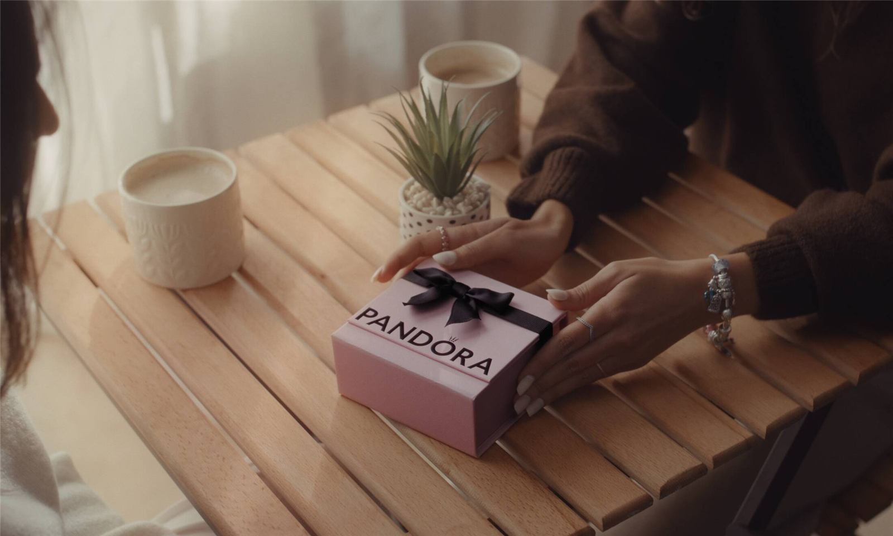
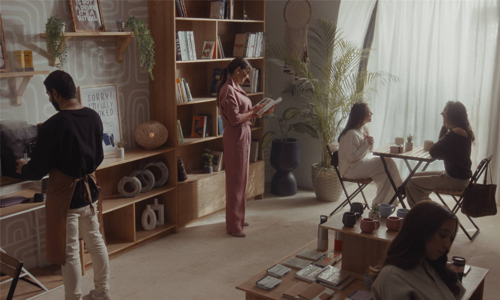
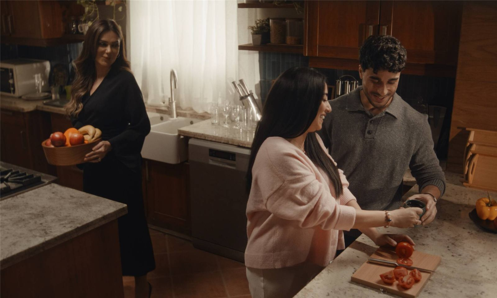
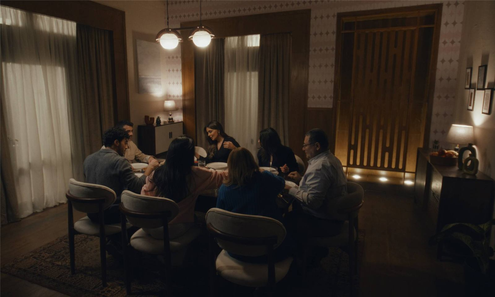

Pandora — The Work
Films & stills from the campaign




↓ The full case study




After years of inconsistent presence, Pandora handed its Egyptian distribution to BTC — a watch and jewelry retailer with category credibility, but no Pandora-specific equity to draw from. The brief, on the surface, was a relaunch. The deeper challenge was emotional.
In a market where serious jewelry means gold and meaningful occasions are declared loudly, Pandora needed a reason to be loved before it could be bought. The official global tagline — "Be love." — was poetic, but in Egyptian Arabic it didn't yet mean anything to anyone.
The strategy didn't begin with a stack of reports. It began with a category observation: every jewelry brand in Egypt was selling the same emotion in the same voice. Romance as performance. Gold as proof. Big-occasion jewelry for big-occasion declarations.
Our initial hypothesis was that Pandora needed a louder declaration to compete.
The hand on the back. The voice note at 2 a.m. The gift that wasn't asked for. "What does love mean to you?" — that question, and the Five Love Languages framework that scaffolds it, became the entire creative spine.
Not a demographic. An emotional permission.
The Five Languages are Egyptians of any age, any gender, any life stage — connected by one thing: they're tired of being told love looks one specific way. Each of them speaks love in their own dialect. Each of them is waiting to hear it back in the same one.
"In Egypt, love is rarely said out loud. It's served, gifted, sat-with, touched, and remembered."
A platform line that does two things at once — it positions Pandora as the brand that gives a voice to feelings that don't have words yet, and turns the global "Be love." into something that sounds native, not translated.
A four-chapter rollout — Pre-Tease, Store Launch, Hero Campaign, Sustain & Loyalty — built on one question, one framework, and one tone of voice. Warm. Emotionally honest. Introspective. Every execution lives somewhere on the same emotional grid: a love language on one axis, a small everyday gesture on the other.
The campaign earned attention before it ever announced itself. Five teaser films, each five to ten seconds long, each silently mapping to one love language. A sunset, two beach chairs, two hands reaching across — Quality Time. A pink box on a rumpled bed, a hand reaching for it — Receiving Gifts. Every teaser ended with the same five-word brief: "What does love mean to you?"
Each vignette was a small, mundane act elevated to the scale of a film — the deliberate first proof of the campaign's deeper promise: love lasts in the little things.
Before social, before press, before a single billboard — the existing Pandora clientele heard from the brand directly. A four-to-six message drip series rolled out across SMS and WhatsApp, spaced over weeks: gentle prompts, mini-questions, poetic excerpts. Not a sale. Not an announcement. A conversation.
The drip was deliberately quiet — no logo lock-up, no urgency. It was the brand's way of doing what the strategy preached: showing up in the smallest possible way, then letting the moment land. A direct demonstration of "love lasts in the little things" before anyone had heard the line.
The relaunch event closed the loop between strategy and store. The night opened the brand's first new-era branch and physically staged the Five Love Languages narrative for press, influencers, and the brand's existing clientele. Influencer invitations arrived in printed gift boxes — translating the deck's "fine paper scroll sealed with wax" into a more shippable object — and generated organic unboxing content from voices including Dr. Nourhan Kandil (originally on the brand-ambassador shortlist, recast here as a launch-night voice) and newlywed micro-influencer Farah Magdy Khalifa, whose Valentine's-week post explicitly named the campaign as "Let Your Heart Speak, which highlights the beauty of the five love languages and how jewelry can express what words sometimes can't."
The night's centerpiece wasn't a stage — it was a phone booth. Guests stepped into the Call Teta Booth to call someone they loved or record a short voice note. The first ten seconds of that message were printed as a tiny waveform card with a QR code — a wallet-sized object that lets them replay the voice anytime. A photographer with a Polaroid captured the moment. Guests left with a physical, hold-able fragment of an act that, on any other night, would have ended the second the call did.
The booth was the campaign's strategic soul, made tangible. It took the smallest, most ordinary expression of love — calling your grandmother — and treated it as a thing worth keeping. No product was sold inside it. None needed to be. The booth was the brand's argument in physical form: that the little things deserve permanence, and that's what jewelry is for.
A cinematic spot built on the deck's original Egyptian Arabic copy — voiced by brand ambassador Injy El Mokkadem, who became the singular face of the campaign. The film catalogues the small things across the five love languages: a word spoken, a moment carved into the heart, a touch felt, a gift that arrived without being asked for, a kindness given without prompting. "With every word spoken, every touch felt, every gift that came unexpectedly, and every act of kindness shown without being asked — the heart will always have something to say." The film ends on the line that anchors the entire platform: قلبك هيتكلم بـ Pandora.
The original strategy proposed a multi-voice interview series — "people from all walks of life" answering "What does love mean to you?" What shipped was sharper. Rather than collect five voices for five love languages, we built one interior monologue across five episodes — all with Injy.
Each episode picks up one love language as its on-screen question. Acts of Service — what's the simplest gesture that makes you feel truly loved? Receiving Gifts — what gift carries more meaning than its price? Quality Time — when was the last time with someone you love that you'll always remember? Every question is a small, almost-throwaway one. Every answer makes the case that the smallest things are exactly what stay.
The relaunch arrived on a brand-new channel built for it — @btc.jewellery, opened with the campaign. And it was the storytelling, not the product posts, that pulled the numbers: the films and interviews built on the Five Love Languages became the channel's most-watched content. Across the public rollout (Jan–Apr 2026), the owned channel earned:
Launch-night creators carried the story onto their own channels — Dr. Nourhan Kandil and Farah Magdy Khalifa added a further ~366K views and 5,400+ likes, with Farah's Valentine's-week post alone reaching 117K views / 2.6K likes.
The campaign moved Pandora from "an imported brand reopening" to a brand whose voice already lived in Egyptian Amiya.
By giving the global "Be love." a local syntax — five love languages, one quiet through-line, one ambassador holding all of them — Pandora earned the right to stop selling jewelry as proof of love and start being remembered as the brand that helps Egyptians say it. In all the little ways it's already being said.